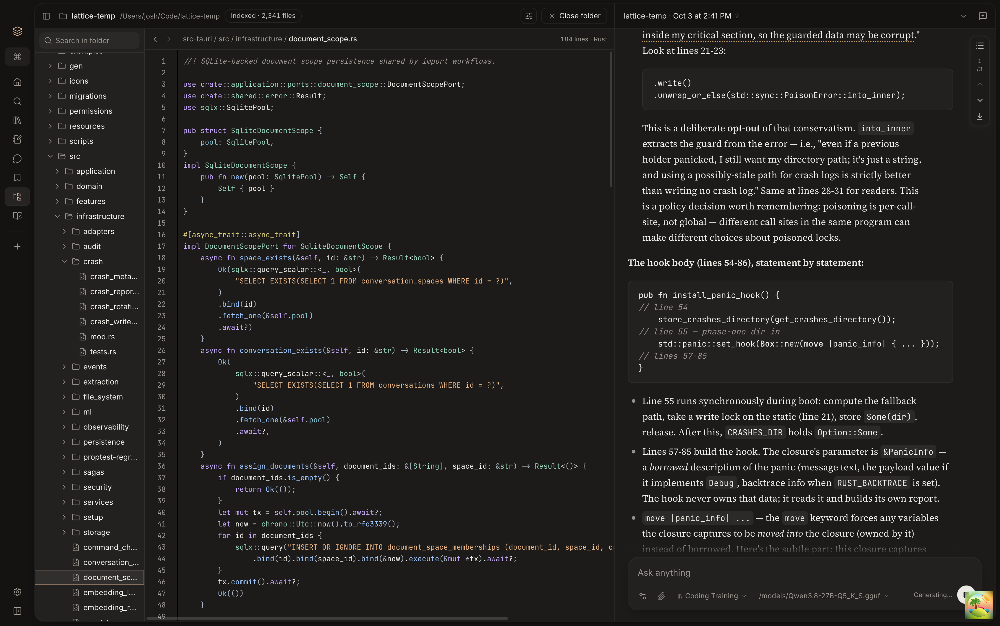
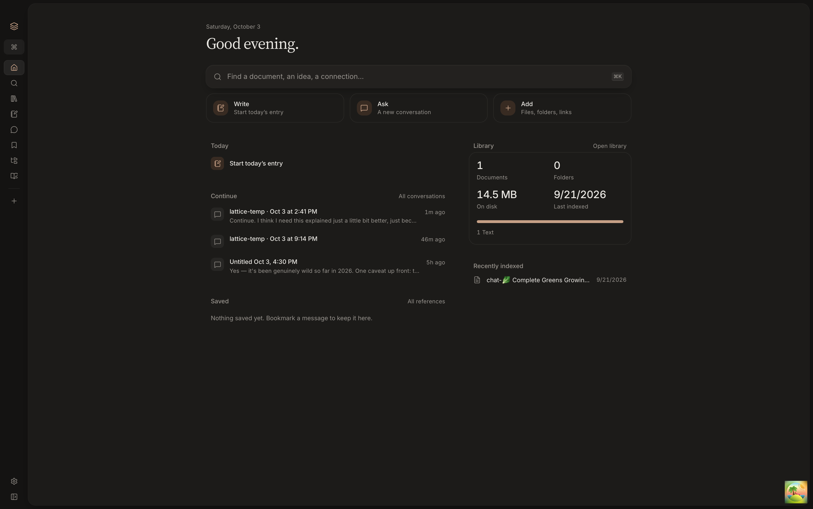
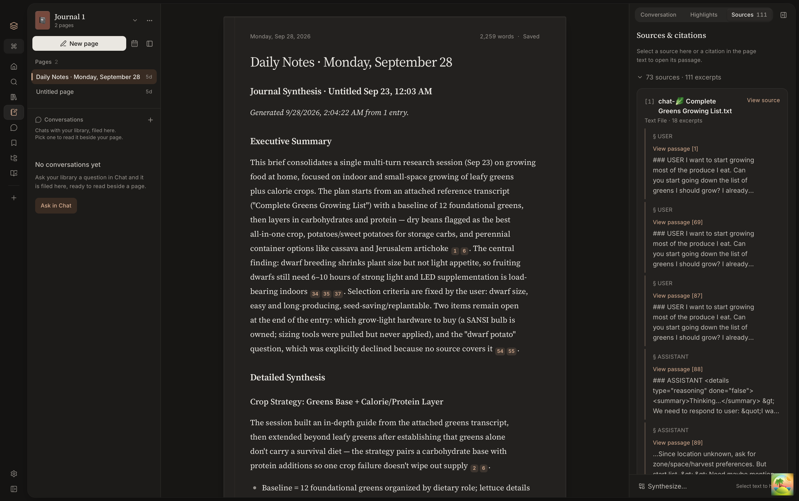
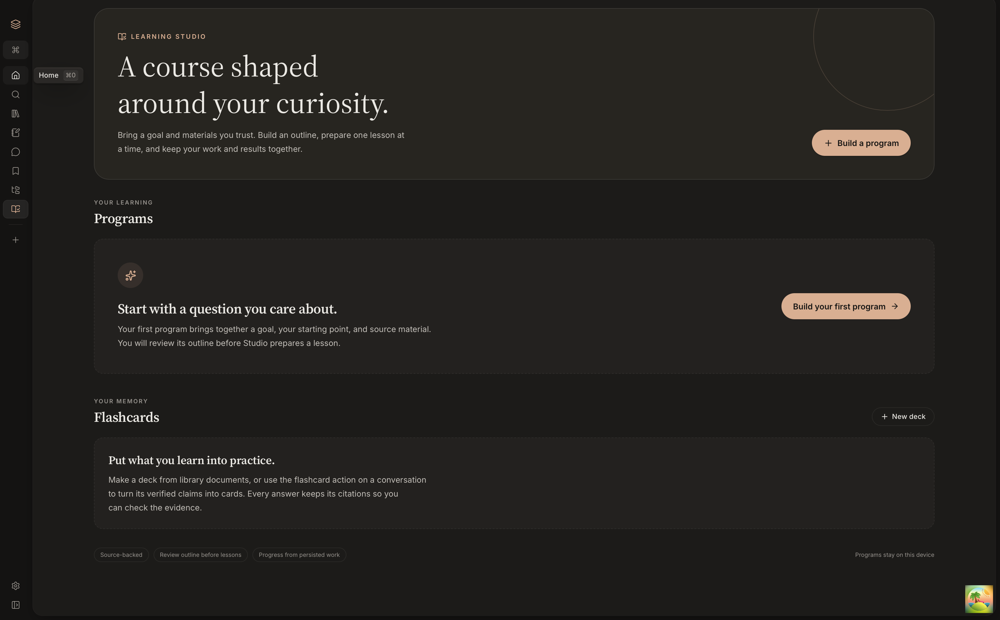

01 / EXPLORER3456×2164
Explorer & code chat
Each opened folder gets its own isolated search index beside a grounded chat.
Local-first · Rust + Tauri + SQLite
Lattice indexes the documents and code on your machine, searches them by keyword and meaning, and answers questions with local language models — every answer cites the passages it came from.

Every screenshot is captured directly from the running macOS build. Switch views below or open any capture at native Retina resolution.
Each opened folder gets its own isolated search index beside a grounded chat.

Shows real library counts, index footprint, recent documents, and active threads.

Draft notes with footnoted sources and quick-capture passages from anywhere.

Generate claim-checked courses, sandboxed coding labs, and FSRS flashcards.
Built in Rust and TypeScript on top of SQLite, USearch vector indices, and a bundled llama.cpp server.
Text is extracted, chunked, and embedded on-device with Qwen3-Embedding-0.6B. Search blends exact keyword matching with vector similarity, finding the right document even when your query uses different phrasing.
Ask questions against your library and get answers with footnoted citations that open the exact source passage. Every response includes a retrieval trace showing which files were pulled in and why.
Build a study program from your sources: curriculum, practice, hands-on sandboxed labs, and spaced-repetition flashcards. Course generation checks each claim against its citation and flags doubtful claims for review.
Open any repository or project directory beside a chat. Browse the file tree, read files in a syntax-highlighted viewer, and ask questions answered with exact line references. Each folder keeps its own index apart from your library.
Open any document and the related panel shows what links to it, which files are semantically similar, and every conversation or journal entry that cites it. Cited web pages are frozen as local snapshots so links never rot.
First launch recommends a model bundle for your hardware run by a bundled llama-server sidecar. Optional catalog models add local reranking, Whisper audio transcription, and PaddleOCR-VL scanned-PDF OCR.
Lattice needs no account or cloud service, and sends no product telemetry. You control every connection that leaves your machine.
After your chosen local models finish downloading, indexing, search, grounded chat, journaling, and Learning Studio run completely offline.
Lattice only makes network requests when downloading models from the catalog or when you explicitly enable an external service.
llama.cpp server, OpenAI, Anthropic, or Google.Settings → Sources (keyless or Brave, Tavily, Exa) for research and claim checking.Or clone the repository to run and package Lattice on macOS, Windows 11, or Ubuntu 24.04 LTS.
macOS 13.3+ · Apple Silicon · 70.7 MB DMG · Bundled llama-server (Metal) & learning Python runtime
SHA-256: b857484f8adc32067103535ebe561bdd25259de78c119520fab1009c8abc1c74
xattr -dr com.apple.quarantine /Applications/Lattice.app
Lattice is open source under the MIT License. Building from source requires Node.js 22.22+ (or 24+), a current Rust toolchain, and the Tauri v2 platform prerequisites.
$ git clone https://github.com/J-Reed700/lattice.git
$ cd lattice
$ npm ci
$ bash crates/lattice-desktop/scripts/fetch-llama-binaries.sh
$ npm run tauri:dev # or: npm run tauri:buildLattice is designed and built by Josh Reed through Lambda Audio LLC. Read the architecture docs, inspect the retrieval evals, or build your own copy from source.